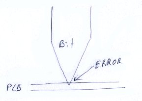

Line Grinder
Gerber Plot to Isolation Milling GCode Software
Isolation Milling Tips and Advice
Consistent Isolation Bit Height
Isolation milling of PCB's is performed by engraving a very fine line through the copper surface of the PCB. If the engraved line forms a closed loop, the interior of the loop will be electrically isolated from the remainder of the board. The cut depths involved are very small - on the order of 0.0015 of an inch or (35 microns). Since the engraving bit is conical, a deeper cut means a wider cut as well. This really matters if the cuts are close together. The value of the IsoZCutLevel parameter in the Isolation_Cut File Manager determines this depth. In reality, the value to which the IsoZCutLevel is set is useless if the starting position of the bit relative to the surface of the PCB is not consistent.
Many people attempt to set the starting height of the bit by just touching it to the surface of the PCB to be milled. It is very hard to get consistently accurate placement since the tip of the milling bit is very sharp, hard to see, and can easily be +/- 0.001 of an inch in error relative to the surface of the PCB. The image below illustrates this method and the error caused by setting it ever-so-slightly too deep:

Visually it is hard to consistently set the height of the bit relative to the PCB - however touch is much more sensitive. Here is a technique which may work for you
- Get an old drill or milling bit of fairly large diameter - I use an old 0.250 inch milling bit. The solid shafts of these are very accurately ground, even on cheap bits, and can be used as a reference height. We will refer to this as the reference height cylinder in the discussion below.
- Place the reference height cylinder flat on the PCB so that it can be rolled back and forth.
- Bring the toolhead down so that the tip of the engraving bit is below the top of the reference height cylinder and the reference height cylinder cannot be rolled under the engraving tool. Do NOT under any circumstances attempt to lower the toolhead directly onto the reference height cylinder. This will surely snap off the very delicate end of the engraving bit. The image below shows the reference height cylinder being rolled up against the engraving bit. As you roll the bit you will feel a slight "tick" as it hits the engraving bit. It is much easier to feel this than it is to see it. The image below shows this as a side view.
- Move the toolhead up a tiny amount and try rolling the reference height cylinder against it again. At some point you will be able to just roll the reference cylinder under the engraving bit.
- If you can only just roll the reference cylinder under the engraving bit then the height of the engraving bit above the PCB will now be equal to the diameter of the reference cylinder.
- For added accuracy and consistency, once you can roll the reference height cylinder under the engraving bit, drop the engraving bit back down a tiny amount so the reference height cylinder can no longer be rolled underneath it. Then press firmly down on the reference height cylinder so as to compress things ever-so-slightly. If, while pressing down on the reference height cylinder, you can gently roll the it under the engraving bit and yet cannot do so when gently rolling it with no down force you will have placed the tip of your engraving bit to within a very narrow window of error with respect to the surface of the PCB. The image below shows this as a side view.
- With a bit of practice it is quite easy to set the height of the bit to a consistent point. You can easily "feel" much more accuracy than you can "see". Once you have the physical height of the engraving tip set to a consistent point, you can adjust the IsoZCutLevel in the File Manager to a value that gives you the cut depth you need. Your machine controller software can easily be told that the engraving bit is starting at the reference height cylinder diameter rather than at zero (the PCB surface) and the IsoZCutLevel will put the bit into the PCB to a consistent level.
Design For Isolation Milling
When you layout the pads and traces on the PCB in your design software, be aware that you will be isolation milling the board. You can do a lot in the PCB design itself to compensate for inaccuracies in the milling process. In practice, this usually means making the traces wider than you would normally have for etched boards, not running traces too close together and avoiding the routing of traces between pads (unless you have the accuracy to cope with this).
What Types of Bits Do I Need?
This isn't particularly obvious, and the information is surprisingly hard to find on the Internet so hopefully summarizing it here will be helpful. The important thing to realize for most of these bits is to make sure they are silicon carbide - fiberglass is tough stuff and will quickly dull the cheaper kind of bit.
- Isolation Routing
- A 60 or 45 degree conical silicon carbide engraving bit. Note that if you dig around on the Internet you will find statements to the effect that the 60 degree bit, paradoxically, cuts a cleaner line than the 45 degree bit. This may be true for some but, I would just like to state here, for the record, that I did not find that to be the case. On my CNC mill the 45 degree bits appear to do a better job. My CNC mill has a collet which accepts 0.125 inch shafts - so I use the 0.125 inch versions.
- Drilling Reference Pin Holes
- I use a 0.125 inch end mill rather than a drill bit. The end mill drills a really nice, high tolerance, hole and the diameter of the bit is exactly the same size as the shafts of my engraving mills. This enables me to use old, dull, engraving bits as the physical reference pins when flipping the board. If you don't have any old broken off or dull bits when you start isolation routing, believe me, you will soon have a plentiful supply.
- Edge Milling
- A silicon carbide chip breaking bit works well. I use a 0.125 inch bit. Standard end mills also do a good job - but I suspect they will get dull much more quickly.
- Drilling
- Well, the drills you use are the size the holes should be - so look in your PCB design software. Having said that, if you don't want to purchase a lot of different drill sizes, a 0.08 inch drill bit will work for most through hole components.
- Bed Flattening
- A standard 1 inch wood router bit does the job nicely.
{kind=link}
{kind=link}
{kind=link}